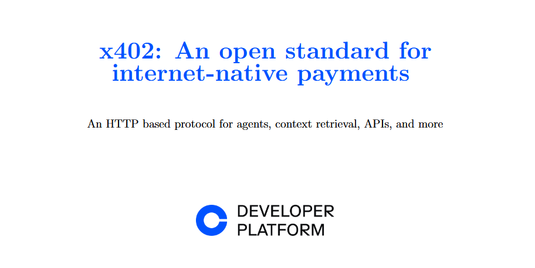
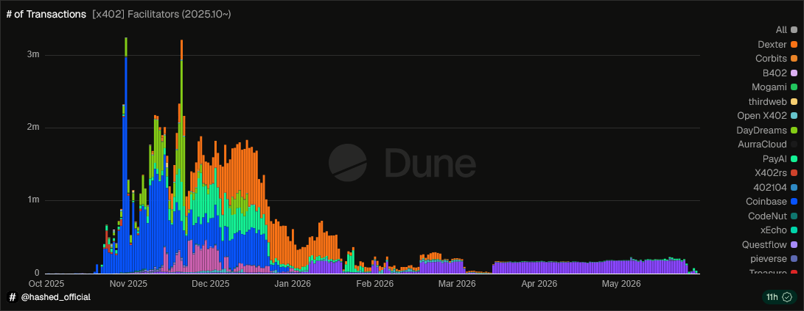
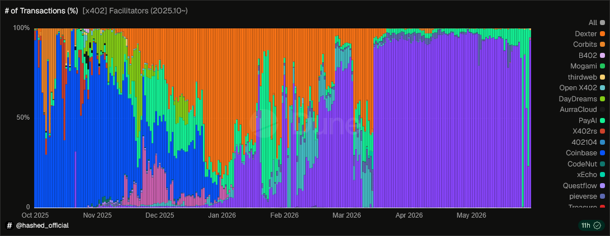
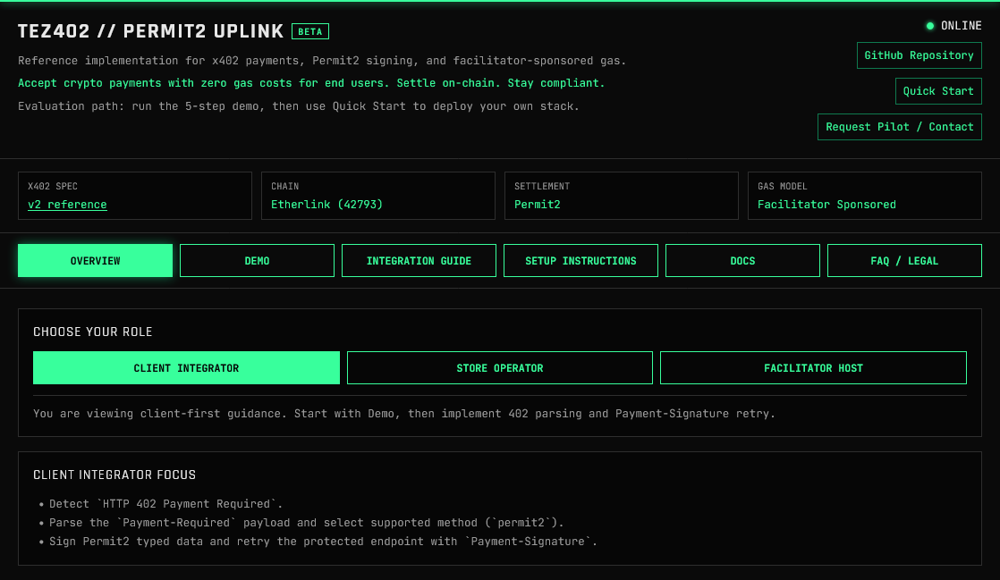

Context
In 2025, I looked at the x402 payment protocol as a low-risk, high-reward experiment. The AI-agent economy on was still highly speculative, but I wanted to see if we could build a foothold early. The strategy was to figure out how machine-to-machine payments would actually work in practice on Etherlink without commiting a massive chunk of rescources if the market took longer to mature.
The Problem Statement
The internet economy is shifting from human-centric browsing to machine-to-machine commerce, powered by AI agents, automated microservices, and IoT devices. However, our financial layer is fundamentally stuck in the Web2 era. Traditional payment systems fail to support this new paradigm in two major ways:
- Micropayments: Legacy credit cards and payment gateways charge rigid base fees (typically 2.9% plus $0.30). If an AI agent needs to buy a single weather data point or a line of code translation for $0.002, the payment processing fee is literally 150 times more expensive than the product itself.
- Web3: While blockchains offer programmatic value transfer, traditional Web3 interactions require the client to hold native gas tokens and manually approve transactions via a wallet pop-up. Forcing an automated agent to manage gas balances and sign network fees for every single request completely breaks automation.
The Challenge
Coinbase designed the open x402 protocol, reviving the dormant HTTP status code 402 Payment Required. It passes payment instructions and cryptographic payment signatures natively through HTTP headers, entirely bypassing account creation. The standard protocol relies heavily on EIP-3009 (transferWithAuthorization), an extension native to major stablecoins like USDC that allows gasless transfers via off-chain signatures.
However, bringing this innovation to Etherlink introduces a severe technical and product barrier. If a product manager wants to enable per-request pricing on Etherlink today, they face a choice: wait for native stablecoin issuers to deploy on the network, or invent a custom routing architecture that handles generic ERC-20 tokens without compromising the seamless, gasless user experience.
Why x402
The open-source x402 protocol provides a fully permissionless, vendor-agnostic architecture that handles discrete on-chain billing natively within standard HTTP headers. Selecting x402 for this Etherlink deployment allows the network to bypass traditional processing overhead and institutional gatekeepers entirely. This creates a first-mover window for true agent-to-agent value transfer.
It should be noted that while x402 is designed as an open standard, the architecture proposed here carries dependencies on Uniswap's Permit2 framework and Coinbase's x402 specification. These are well-established, audited protocols, but the dependency surface should be acknowledged when evaluating long-term maintainability.
- Accountless, Keyless Access: No API keys or accounts are required. The agent's digital wallet serves as both its identity and its payment method.
- Automated Trading: Because the protocol allows software to programmatically sign and settle transactions instantly via an embedded crypto wallet (using stablecoins like USDC), a trading bot can independently manage its own operating capital.

Protocol Architecture & Token Adaptability
Standard out-of-the-box x402 infrastructure (such as Coinbase’s default stack) is typically hardwired for EIP-3009 (transferWithAuthorization), which is natively used by major stablecoins like USDC on mainstream chains. However, on Etherlink, not all tokens support EIP-3009 capabilities. A standard facilitator would simply reject unsupported asset transactions. A custom facilitator could bridge this gap by using Uniswap's Permit2 framework instead.
From a product perspective, you don't want to maintain two completely separate relaying infrastructures when native stablecoins eventually land on the network. This unified architecture ensures that merchants and developers use a single, consistent facilitator API regardless of whether they are paying with an ecosystem token or a supported stablecoin.
The facilitator determines which path to use based on the asset address specified in the x402 payment requirements. If the asset contract supports EIP-3009, the facilitator invokes the direct transfer authorization. If not, it falls back to the Permit2 proxy route. This decision is made at runtime per-transaction, requiring no configuration from the store operator.
- EIP-3009 (for native stablecoins via direct transfer authorizations).
- Permit2 (for standard ERC-20 tokens via the proxy contract).
The Three-Sided Market
Launching a payment protocol requires balancing a three-sided marketplace. The architecture removes typical Web3 UX bottlenecks by cleanly isolating user responsibilities:
- Client Integrator (The Buyer): Developers building AI agents or dApps. They sign transaction payloads off-chain. They enjoy a Web2-like experience because they do not need to hold or manage native Etherlink gas tokens across dozens of automated nodes.
- Store Operator (The Seller): SaaS or API merchants. They serve protected endpoints (e.g., /api/weather) using standard HTTP 402 headers. They completely bypass the complexities of recurring credit card billing or user account creation loops.
- Facilitator (The Relayer): Infrastructure operators running the Rust backend. They ingest client signature payloads, pay the on-chain network gas fees, and broadcast the transaction. They drive network velocity without ever taking custody of user assets.
Technical Payment Flow
The runtime interaction requires no interactive wallet pop-ups, executing purely via programmatic HTTP handshakes:
[ Client ] [ Store Server ] [ Facilitator ]
│ │ │
│ 1. GET /api/... │ │
├────────────────────────────────────────────────>│ │
│ │ │
│ 2. HTTP 402 Payment Required │ │
│ (Payment-Required requirements JSON) │ │
│<────────────────────────────────────────────────┤ │
│ │ │
│ 3. Sign PermitWitnessTransferFrom off-chain │ │
│ │ │
│ 4. GET /api/... │ │
│ (with Payment-Signature header) │ │
├────────────────────────────────────────────────>│ │
│ │ │
│ │ 5. Relay to Facilitator │
│ ├───────────────────────────────────────>│
│ │ │
│ │ 6. Submit settle() to Proxy Contract │
│ │ (Facilitator pays gas) │
│ │<───────────────────────────────────────┤
│ │ │
│ 7. HTTP 200 OK + X-Payment-Response │ │
│<────────────────────────────────────────────────┤
- Initial Request: The client calls an asset-gated route (e.g., GET /api/weather).
- The Paywall Challenge: The store returns an HTTP 402 Payment Required status. The response body and headers deliver a JSON envelope containing the asset address, price, and target chain ID (Etherlink: 42793).
- Off-Chain Signing: The client signs a Permit2 PermitWitnessTransferFrom message locally. The designated spender is hard-locked to the x402ExactPermit2Proxy smart contract.
- Payment Submission: The client retries the API request, appending the verification data string inside the standard Payment-Signature header.
- On-Chain Settlement: The server hands the payload to the Rust facilitator. The facilitator uses its built-in gas pool to invoke the proxy contract's settle(...) routine.
- Funds Movement: The on-chain proxy validates that the transaction fields align perfectly with the client's signature. The Permit2 contract pulls the exact amount of BBT tokens out of the client's balance and deposits them directly into the merchant's wallet.
- Fulfillment: Upon processing confirmation, the store unblocks the resource, returning an HTTP 200 OK and the dataset, alongside an X-Payment-Response header for verification tracking.


Risks
- Client Wallet Exposure: Malicious applications could attempt to exploit infinite allowance schemes to strip client assets. As such the Permit2 architecture forces allowances to be dynamically bounded, ensuring spending permissions completely expire the moment the requested transaction completes on-chain.
- Client Replay Attacks: Intercepted transaction headers could be broadcast maliciously on external EVM networks. As such The platform mandates strict Chain-ID consistency checked at the contract layer, immediately rejecting signatures if network contexts deviate from the intended Etherlink infrastructure.
- Store Spoofed Headers: Attackers could try to manipulate endpoint headers to intercept client token flows. As such the framework implements Dynamic Resource Resolution, locking destination values back to verified host environment settings.
- Store API Misuse: Malicious sites could execute unauthorized script calls into the core service layer. As such the environment establishes an explicit CORS allowlist matrix, dropping non-authorized browser and client network calls at the gateway.
- Facilitator Gas Starvation Because clients rely on facilitator gas sponsoring, a depletion of native Etherlink tez locks up the checkout funnel. As such the system integrates automated infrastructure tracking paired with structured wallet top-up logic.
Decision Framework
This initiative is structured around staged validation gates. Resources are committed incrementally based on signal quality at each checkpoint.
Now ────────────────────────────────────► 3 Months
│ │
▼ ▼
Assessment Decision (MVP release)
(current phase) (commit or walk away)
Permit2 research Dedicated squad OR
security validation reassign to revenue
Merchant pilots assessed priorities
Conclusion
The x402 protocol on Etherlink represents a genuine asymmetric opportunity. The technical architecture is sound, the security model addresses the primary attack vectors, and the unified facilitator approach ensures forward-compatibility as the ecosystem matures. The resource commitment to validate this thesis is bounded and reversible. The primary risk is whether demand for AI-agent commerce on Etherlink materializes quickly enough to justify deeper investment. The decision framework above provides clear escalation and exit criteria to ensure that judgement, not inertia, governs continued commitment.
Reflections
The initial wave of excitement for the x402 protocol in late 2025 sparked a surge in onchain activity. Although that momentum later cooled alongside broader market conditions, the structural case for agentic payments remains highly compelling. As infrastructure builds out, network activity is beginning to accelerate once again. Recent milestones highlight this momentum: the TZ APAC team launched Tez402 on Etherlink, and BlockRun has emerged as the most popular x402 storefront, operating as a functional pay-per-call AI gateway.
